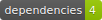

A handy npm to operate against some of the most known Crypto Exchanges
npm i ts-crypto-cliHere is a little handler to perform a 2-steps withdrawal from Kraken in 20 lines of code using the lib.
import { krakenPrivateApiRequest } from 'ts-crypto-cli'
const krakenWithdrawAsset = async (asset: string, key: string, amount: number): Promise<void> => {
const withdrawInfo = await krakenPrivateApiRequest({ url: 'WithdrawInfo', data: {
asset,
key,
amount,
}})
const { limit } = withdrawInfo
if (Number(limit) < Number(amount)) {
throw new Error(`Can´t withdraw ${amount} ${asset}. Max. available ${limit}`)
}
krakenPrivateApiRequest({ url: 'Withdraw', data: {
asset,
key,
amount,
}})
}
export {
krakenWithdrawAsset
}Create a .env file under current working directory with your own API credentials and run
npx ts-crypto-cli##
# Each REST request/response can be optionally recorded to a log file if you set a path here
##
#TS_CRYPTO_CLI_LOGS_PATH=./ts_crypto_cli_logs
KRAKEN_API_KEY=<...>
KRAKEN_API_SECRET=<...>
HITBTC_API_KEY=<...>
HITBTC_API_SECRET=<...>
BINANCE_API_KEY=<...>
BINANCE_API_SECRET=<...>
##
# DEV only
##
#DEBUG=ts-crypto-cli:*This method is more secure as you won't need to persist the KEYS to a file
$env:KRAKEN_API_KEY="<...>" ; $env:KRAKEN_API_SECRET="<...>" ; $env:HITBTC_API_KEY="<...>" ; etc... ; npx ts-crypto-cliset KRAKEN_API_KEY=<...> & set KRAKEN_API_SECRET=<...> & set HITBTC_API_KEY=<...> & etc... & npx ts-crypto-cliKRAKEN_API_KEY=<...> KRAKEN_API_SECRET=<...> HITBTC_API_KEY=<...> etc.. npx ts-crypto-cliYou can use different API keys/secrets against the same exchange. Generate the new API client instances with one of the following methods:
Generated using TypeDoc